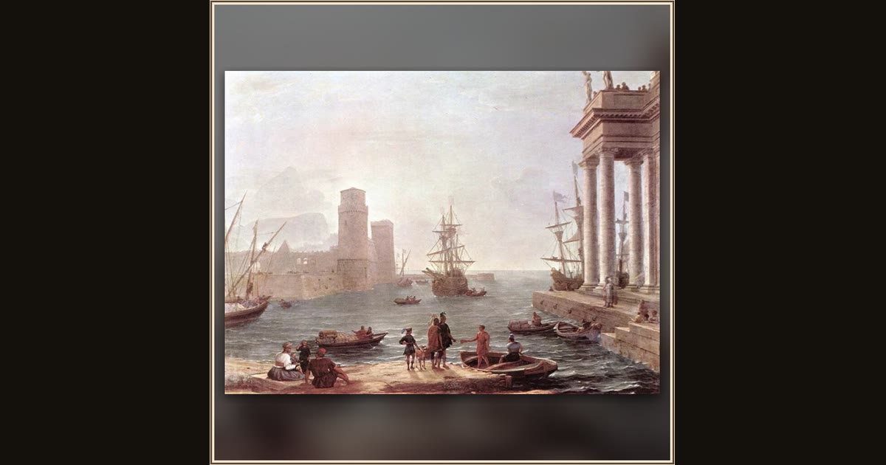

Departure of Ulysses from the Land of the Phaeacians
Claude Lorrain · 1646 · Musée du Louvre · Paris, France
In golden morning mist, the Phaeacian ship waits in the harbor to carry Odysseus home at last — a farewell painted all in light. Explore its place in Book XIII of the Odyssey.